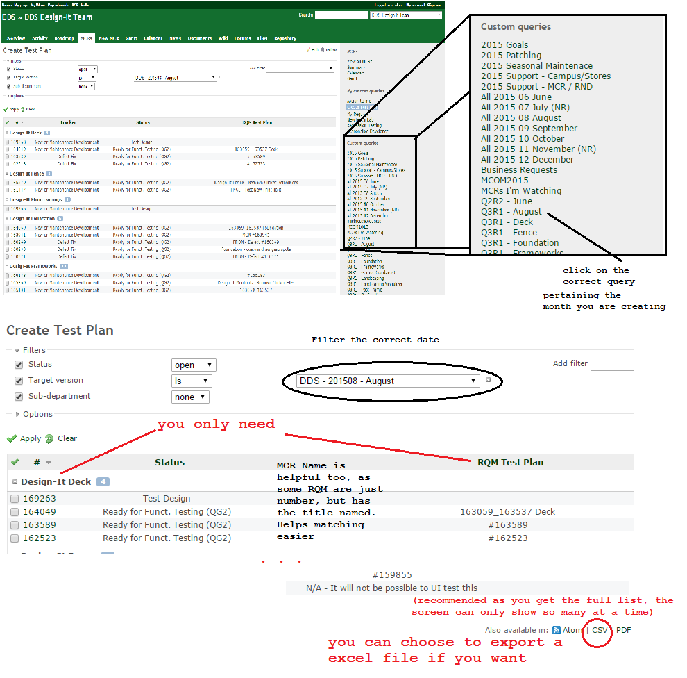
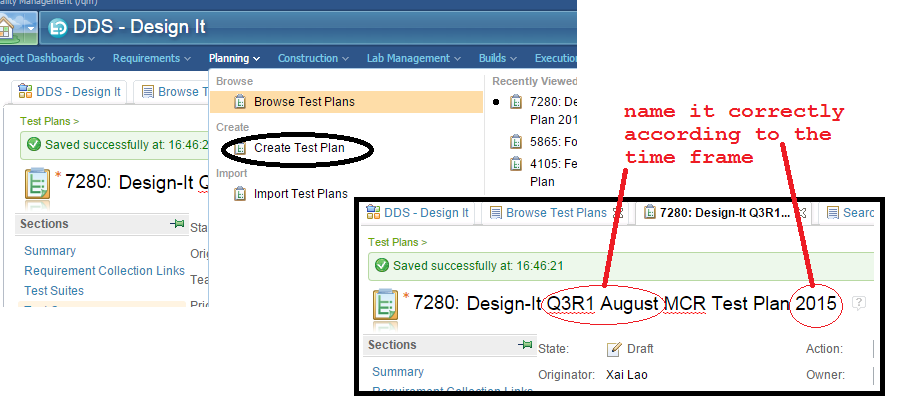

RQM Test Plan
We create test plan before we can run the MCR tests in the lab -- for example for Q3R1 August Test Plan. Every month when we complete our MCRs, testing comes, and that testing has a name -- for example Test Plan Q3R1, Test Plan Q3R2, etc. The name changes every month and increments throughout the year and resets the following new year to Q1R1.
Setup Needed
- RQM (2 windows, one for searching the tests and one for putting the tests)
- Redmine > filter by clicking on the correct Q3R1 Month under the custom query

- 
- Basically you want to put all the MCR tests into the new test plan you created, you just have to be careful with one is a test suite and which is a test case
- Put MCR test suites in suites and MCR test cases in case within the test plan.
- The rest of the instruction is similar to how you create test suite, case, scripts, where you put scripts inside case, and case inside suites